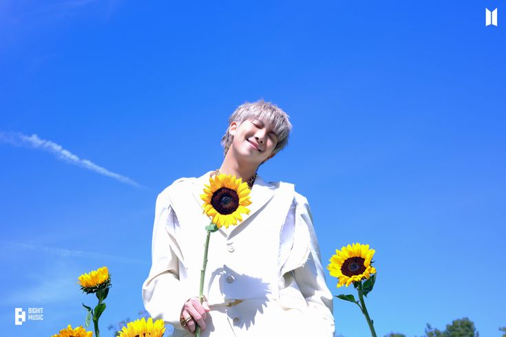
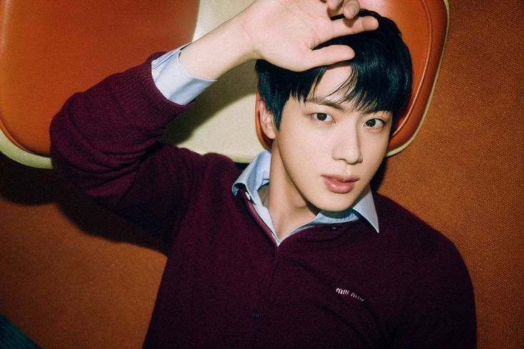

At last, the wait is over! 2025 is here! BTS is back!
We've waited with love, tears, and strength together. Proves that, we are really strong
How did we survive?
Let’s travel back together and see 💜
it captures the unforgettable and proud moments from 2022 to 2025
grp2.png)
Highlights of 2022
Proof - BTS's First Anthology Album

"Yet to Come" is a heartfelt song from the Proof album. It reflects on BTS's journey so far and conveys a message that the best part of the journey with them is yet to come.
BTS FESTA Dinner 2022
It was truly a bittersweet moment. BTS shared that they were beginning a new journey as solo artists and would take a break from group activities for a while. They also opened up about their thoughts and feelings over the past years.
Jack in the Box - J-Hope's First Solo Album

"Arson" is one of the tracks from Jack in the Box, where we see a different side of our Hobi. Through this song, he exposes the inner conflict between burning ambition and the toll it takes.
J-Hope at Lollapalooza

J-Hope made history as the first South Korean artist to headline the main stage at Lollapalooza 🎤🔥. He lit up the stage with a powerful performance—and we, ARMY, proudly call it "Hobipalooza" 💜🎶🌟.
BTS Vlogs

At the beginning of Chapter 2, we were gifted with the “BTS VLOG†series—one from each member. RM shared his peaceful 'Namjooning' moments at art museums, Jin showed off his cooking skills, SUGA explored woodworking, and J-Hope took us behind the scenes of his Lollapalooza preparations. Jimin crafted bracelets, V went on a serene drive, and Jungkook enjoyed a quiet camping trip. Each vlog was sweet and full of charm—reminding us just how special their individual worlds are 💙.
BTS at TMA

The 2022 TMA was truly unforgettable. After BTS announced their group break to focus on solo activities, seeing all seven of them together on stage again was incredibly emotional for ARMY.
Their performances of “Yet To Come†and “For Youth†touched our hearts deeply — it felt like a warm reminder that their journey as a group wasn’t over. The best is yet to come.
BTS took home 7 awards, including the Daesang (Grand Prize) for the fifth consecutive year! 💥 We were especially proud when Jin received an award, and all our hard work voting on Fan N Star paid off. ARMY truly gave it everything — and BTS made us feel seen and appreciated in return.
This night was a beautiful mix of joy, tears, and pride — a memory that we’ll hold close forever. 💫
Yet to Come in BUSAN
On October 15, 2022, BTS held a monumental free concert, “Yet To Come in BUSAN,†as part of their role as ambassadors for Busan's World Expo 2030 bid. Over 50,000 ARMYs filled the Busan Asiad Main Stadium — though I wasn’t one of them 🙃.
Whatever, I got to watch it online — and it was truly amazing.
Seeing all seven of them on stage together, smiling with tearful joy, was so emotional. The most unforgettable moment? Their RUN BTS performance — it was absolutely powerful ğŸ˜ğŸ”¥.
And then came a surprise from Jin — he announced his upcoming solo single, and softly hinted that he would be the first to enlist for military service. It was a mix of pride, excitement, and tears.
A memory forever etched in ARMY hearts. 💜
The Astronaut – Jin

🌌 Before leaving for his military service, Jin gifted us a beautiful song, "The Astronaut." But this is more than just a song—it's a heartfelt letter to ARMY, filled with his love and gratitude. Every note, every lyric, is a message of comfort and affection. 💜 🶠Jin’s soft, soothing vocals blend perfectly with the dreamy melody, wrapping listeners in a warm hug. The music video, with its touching story, amplifies the song’s emotional depth—it’s a tale of connection, of finding your way back home to those you love. 🚀✨ 💖 "The Astronaut" isn’t just music; it’s a memory, a promise, and a heartfelt farewell before his temporary absence. It’s Jin’s way of saying, "I may be away for a while, but my love for you is always here." ğŸŒ
Jin with Coldplay Live
"The Astronaut LIVE with COLDPLAY."
🌌 As "The Astronaut" is an emotional song, we also got to witness its live performance on stage with Coldplay. It was a heartfelt moment for us. Jin stood on stage, smiling with tears in his eyes. The entire fandom cried while watching this unforgettable performance. ğŸ˜
J-Hope at MAMA
🌟 At the 2022 MAMA Awards, J-Hope delivered a breathtaking solo performance that left a lasting impression. Performing "MORE," "Arson," and "Future," his stage was a mix of energy, artistry, and heartfelt emotions. 🶠His powerful and emotional performance stood out, capturing the hearts of all who watched. 💫 🆠BTS dominated the event, taking home six major awards: Artist of the Year, Album of the Year (for Proof), Worldwide Icon of the Year, MAMA Platinum, Best Male Group, and Worldwide Fans' Choice Top 10. ğŸŒâœ¨ J-Hope, as the attending member, also received two individual awards: Most Popular Male Artist and the Bibigo Culture & Style Award. 🥇 📠A special moment unfolded when J-Hope had a phone conversation with Jin while delivering his speech on stage. It was a sweet, emotional moment.
Jungkook at the FIFA World Cup
Watch ì •êµ (Jung Kook) 'Dreamers' @ FIFA World Cup Qatar 2022 Opening Ceremony on YouTube
ğŸŒâœ¨ The FIFA World Cup — the world's biggest show — brought us the incredible theme song "Dreamers" by Jungkook. 🌟 What makes it even more special is that Jungkook made history by performing live at the opening ceremony of the 2022 FIFA World Cup in Qatar. 🎤🏆 ✨ Dressed in a sparkling black jacket and joined by dancers, Jungkook delivered an electrifying performance. ⚡ He shared the stage with Fahad Al Kubaisi, creating an unforgettable moment that gave everyone goosebumps. 😍🌠 The entire world watched and celebrated. 🌐🎉 🶠The official music video for "Dreamers" is equally breathtaking, featuring Jungkook dancing among flags from around the globe. 🌠It beautifully captures symbolic visuals that highlight Qatar’s rich cultural and natural heritage. 🌺🌴
Indigo / RM

🌌 Indigo by RM — Documentation of his Youth in the moment of the independent phase. 💠This masterpiece is a collection of stories, emotions, and reflections of his twenties. With soulful lyrics and captivating melodies, Indigo became a mirror of his thoughts, raw, and honest. From the serenity of “Wild Flower†🌸 to the vibrant energy of “Still Life,†🶠each track is a piece of his soul shared with the world. Also, we saw a spectrum of his colors — his fears, dreams, wisdom, and warmth. 💙
Jin's Military Enlistment
Jin was the first member of BTS to begin his mandatory military service, and at that time, it was a heart-wrenching moment for ARMYs worldwide. 💔 The members gathered to send him off, their smiles hiding their sadness. Tears glistened in their eyes as they hugged Jin tightly, knowing it would be a long wait until they were all together again. 💧 Yet, amidst the sadness, there was also a sense of pride — Jin’s bravery and unwavering sense of duty. Proud of you, JIN
Suchwita – A Refreshing Show by SUGA 🌟

Suchwita is a variety web series hosted by SUGA, where he invites celebrity guests—including fellow BTS members, Korean musicians, actors, and public figures—for relaxed, heartfelt conversations over drinks. The name is a playful mix of "🶠Suchwi" (drinking) and SUGA’s solo track "Daechwita."
In each episode, SUGA's warm and insightful style 🌱 brings out candid stories, personal experiences, and dreams from his guests. The show even had a fun twist in episode 9, transforming into "R-chwita" (R취타), where RM 🌳 took over as host and SUGA became the guest.
🻠A toast to SUGA's wisdom, wit, and the unforgettable stories shared on Suchwita! ✨
BTS 8 Special Photofolio
A masterpiece series of unique essence of each BTS member
Me, Myself, and RM ‘Entirety’
Namjoon reveals his duality—the calm, contemplative soul and the fierce, magnetic performer.
Me, Myself, and Jin ‘Sea of JIN island’

Sea of JIN Island invites us into Jin’s world of oceanic emotion and mystery through three distinct, dreamlike concepts. It shows fans new and unusual sides of Jin.
Me, Myself, and SUGA ‘Wholly or Whole me’
Wholly or Whole Me celebrates SUGA’s freedom in the wild nature of LA, showing both rawness and reflection.
Me, Myself, and J-hope ‘All New Hope’
j-hope’s All New Hope unveils a luminous, new side of him—ambiguous, radiant, and full of possibility.
Me, Myself, and Jimin ‘ID: Chaos’
Jimin fearlessly explores his different moods along with his emerging strength.
Me, Myself, and V ‘Veautiful days’

V’s Veautiful Days transports us to a reimagined 19th-century England, echoing his refined taste and nostalgic heart.
Me, Myself, and Jungkook ‘Time Difference’
Jungkook’s Time Difference captures the poetic contrast between day and night, exposing both his vulnerabilities and strength.
Us, Ourselves, and BTS ‘We’
It brings together the shared memories of the seven, representing both the past and present—a tribute to their enduring unity. As BTS said, “The time has come where the seven of us come together as one to dream.”
Highlights of 2023
🵠On The Street by J-Hope with J.Cole

On the Street is J-Hope's heartfelt gift to fans before his military enlistment. The title refers to his roots—"street dance"—from which his dream to become an artist began, and the path the artist & fans will continue to walk together.
The deeply meaningful music video adds another layer of emotion, capturing the essence of connection, dreams, and shared memories.
J-Hope's Military Enlistment
.jpg)
On April 18, 2023, J-Hope of BTS officially began his mandatory military service, marking an emotional moment for ARMYs worldwide.
In his final Weverse live before enlistment, J-Hope reassured fans by saying, "Please don't be too upset, since I'm doing my duty as a healthy youth. So what I wanted to tell you is to not worry, and I'll go and come back well."
J-Hope's enlistment was a bittersweet moment—filled with pride for his courage and sacrifice but also a longing for his bright presence.
🶠Jimin's Debut Solo Album - FACE

FACE is Jimin's debut solo album, a raw and introspective milestone in his artistic journey. Through this album, he unveils personal struggles and emotions experienced during the pandemic.
The title track Like Crazy, inspired by the 2013 film, is a synth-pop masterpiece that captures the yearning to escape reality. With its hypnotic melody and Jimin's ethereal vocals, it became an instant global phenomenon.
Historic Achievement: The song debuted at #1 on the Billboard Hot 100, making Jimin:
The first South Korean solo artist to top the chart
One of only 7 non-English songs to achieve this
A record-breaker with 10.04 million Spotify streams in a single day (2023)
🵠The Planet by BTS
The Planet is a soundtrack for the South Korean anime "BASTIONS," a special OT7 single released during their military service period.
This cheerful, upbeat track showcases BTS's signature harmonies and positive energy, serving as a reminder of their unity. The song's joyful message about protecting our world together resonated deeply with ARMY worldwide.
D-DAY Album by Agust D (SUGA)
D-DAY, SUGA's official first solo album under his alter ego Agust D, is a self-written, self-produced million-seller masterpiece that broke records globally.
Serving as the powerful finale to the Agust D trilogy, it showcases SUGA's artistic evolution through tracks like:
"Haegeum": A genre-defying hip-hop anthem featuring traditional Korean instrumentation
"AMYGDALA": A deeply personal exploration of trauma and mental health
The album debuted at No. 2 on the Billboard 200, solidifying SUGA's place as a boundary-breaking solo artist.
D-DAY Tour

Following the release of D-DAY, SUGA embarked on a powerful solo world tour that left a lasting impact on ARMYs globally.
The tour was especially meaningful as fellow BTS members showed their support—RM, Jimin, and Jungkook joined him on stage, while Jin and J-Hope attended despite their military service.
The final concert was particularly emotional, with SUGA breaking down during performances of "Dear My Friend" and "AMYGDALA." He also revealed his "7" tattoo, making the night unforgettable for fans.
Take Two – Festa special song by BTS
Take Two is an emotional song released to celebrate BTS's 10th anniversary, conveying their appreciation for ARMY.
Written by RM, SUGA and J-Hope, the song expresses both gratitude for their journey so far and a promise to continue walking together in the future.
BTS Festa 2023

On June 13, 2023, BTS marked an incredible milestone—10 years since their debut. To honor this long journey with ARMY, they launched the heartwarming project BTS Presents Everywhere. Landmarks across Seoul glowed in purple, symbolizing their lasting bond with fans worldwide.
As part of Festa 2023, we were gifted with a treasure trove of special content. One of the most touching moments was Jimin’s performance of his hidden track Letter, which was a warm hug to us.
Another unforgettable highlight was Jin’s surprise appearance on Suchwita. The most meaningful moment came on June 13, when a special live event was hosted by RM at Yeouido Hangang Park. It was more than just a gathering—it was a reflection of love, memories, and connection.
During the event, RM had phone calls with Jungkook and V, making the moment feel complete despite the members being in different places. The night ended with a stunning fireworks display, lighting up the sky just like BTS has lit up our lives for the past 10 years.
RM expressed a heartwarming message during the event:
"Time goes by so fast. Everything has changed, and I've changed a lot. I'm not sure what I'm going to be doing with what feelings on the 15th and 20th anniversaries, but my love for you won't change."
📖 Beyond the Story – 10-Year Record of BTS
Beyond the Story is BTS’s first official biography, created in celebration of their 10th anniversary. 🥳💜 Co-authored by BTS and journalist Kang Myeong-seok, this book takes us on a heartfelt journey through their story—from humble beginnings in Seoul to becoming global superstars. ğŸŒâœ¨ The book is divided into seven chapters, including Seoul, Why We Exist, Love, Hate, Army,,Inside Out, A Flight That Never Lands, The World of BTS,and We Are. Each chapter dives deep into BTS’s memories, struggles, and dreams. 🛤️💬 What makes it even more special is the inclusion of over 330 QR codes 📲—letting us experience exclusive videos and moments alongside the stories. Beyond the Storyhas been translated into 23 languages.ğŸŒ
This book tells the whole world about their untold struggles and how they became the biggest boy band in the world.
💫💜Jack In The Box (Hope Edition)
SUGA's Military Enlistment
Layover Album by V

Layover is V’s beautiful solo debut album, released on September 8, 2023. With soothing tracks like “Rainy Days,†“Blue,†“Love Me Again,†“Slow Dancing,†and “For Us,†the album showcases V’s deep emotions, soft vocals, and unique artistry. Each song has its own music video, creating a cinematic experience that feels personal and comforting. One of the most special parts of this album is the appearance of V’s beloved pet dog, Yeontan. He featured in the music videos for “Blue,†“Rainy Days,†and “Slow Dancing,†making the visuals even more heartwarming. The physical album also includes designs and touches inspired by Yeontan, and V even did a few performances with him—those moments were truly precious. We miss Yeontan and V so much, and Layover is a gift that keeps them close to our hearts. Among the standout tracks, “Love Me Again†achieved remarkable success. It became V's first solo song to surpass 1 billion streams on Spotify, marking a significant milestone in his solo career. Additionally, "Love Me Again" music video garnered over 100 million views on YouTube.
📀 Golden Album by Jungkook

Golden is Jungkook's debut solo album, released on November 3, 2023. The album features 11 all-English tracks, including the hit singles "Seven" (featuring Latto), "3D" (featuring Jack Harlow), and "Standing Next to You". The title "Golden" reflects Golden moments of Jungkook,BTS's "Golden maknae," symbolizing the peak moments of his solo career.Among these, "Seven" stands out as a record-breaking track. It debuted at No. 1 on the Billboard Hot 100 and Global 200, marking Jungkook's first solo chart-topping hit. The song set a Guinness World Record by becoming the fastest track to reach 1 billion streams on Spotify, achieving this milestone in just 108 days."Seven" also became the first Asian artist’s track to hold the No. 1 spot on the Spotify Daily Top Song Global chart for 71 days and spent over 400 consecutive days on the Spotify Global Top Songs chart, showcasing its enduring popularity.
Golden On Stage
🎤BEYOND THE STAGE- BTS DOCUMENTARY PHOTOBOOK : THE DAY WE MEET
💌🎶Closer Than This by Jimin
Wherever u r by V ft. UMI
“Wherever u r is the song about how love is a feeling that can be found no matter the distance, people listen to it no matter where they are in the world, they can feel that—frequency of love.†– UMI
Military Enlistment: RM, V, Jimin, Jungkook

Jin’s Monthly Messages

Letters by J-Hope

Jungkook's Live- Used to be a routine
2024 Highlights
Hope on the street
🎧Friends by V
Love Wins All – V & IU
“Love Wins All†is a heart-touching song by IU, and the music video features V, who captured hearts with his emotional and powerful acting.His expressions, chemistry with IU, and soulful presence made the story unforgettable. V’s acting amazed everyone, proving once again that his artistry extends far beyond music.
🧠Right Place Wrong Person – RM
Watch 'LOST! official MV' on YouTubeRight Place, Wrong Person is RM's second solo album, released on May 24, 2024. The album explores themes of alienation, disconnection, identity, and existential reflection, capturing the feeling of being in the "right place" physically but emotionally or mentally feeling like the "wrong person." It’s a deeply introspective project, filled with moody textures and reflective lyrics. RM uses the album to express the contradictions and dualities of life, feeling lost, misunderstood, and trying to define oneself beyond public perception. Songs like “Come Back to Me†and “LOST!†express yearning, confusion, and vulnerability. The album doesn't chase mainstream trends; instead, it values artistic freedom, emotional honesty, and raw self-expression. The music video for "LOST!", released as part of the album’s rollout, was met with global acclaim. Known for its surreal, symbolic visuals and bold artistic direction, the MV shone brightly at the 63rd Shark Music Video Awards in London. It sparked wide discussion for its depiction of emotional chaos, inner conflict, and the metaphor of being trapped in a maze of one’s own thoughts.
Jimin – "MUSE" (2nd Solo Album)
Never Let Go – Jungkook
On every festa, BTS we recieve bunch of gifts from BTS. So in this festa 2024, Jungkook gifts us a special song Never Let Go
Jin’s Comeback

June 12, 2024finally the day when moon of ARMY universe again shines. Jin discharged from military. All other members also went to his camp to recieve him. It's was so heartfelt moment to see our Jinnie again and all the members together after so long time.We also got a OT7 photo on X(twitter), Jin came on live.
Jin’s Hug Event
After getting discharge from military, Jin didn't took rest and started back to back events. So the first event is Hug event. 100 lucky ARMY got a chance to hug Jin. Jin choosed a very cute way to greet ARMY after finishing his military service.
FESTA 2024

June 13, 2024 — BTS 11th Anniversary Though this year’s Festa was different, with BTS not together as a group, they made sure we never felt alone.Jin returned from the military and lit up the stage once again — radiating charisma, cuteness, and undeniable charm. Seeing him perform again was pure happiness. And when he shouted “ARMY!”, it was deeply heartwarming
🔦 Jin at the Olympics
On July 14, 2024, Jin proudly represented South Korea as a torchbearer in the Paris 2024 Olympic Torch Relay. This marked one of his first major public appearances following his military discharge in June. Dressed in the official relay uniform, Jin carried the Olympic torch along Rue de Rivoli, concluding his segment at the Place du Carrousel, near the iconic Louvre Museum. He then passed the flame to French skier Sandra Laoura. Despite initial nerves, Jin expressed deep honor in participating in this symbolic event, which promotes global unity and peace.
Are You Sure - travel vlog by Jimin and Jungkook (guest tae tae)
Are You Sure is a travel show by Jimin and Jungkook which follows Jimin and Jung Kook as they travel to
three iconic global destinations: New York state, USA; Jeju Island, South Korea; and Sapporo, Japan. V also joined as guest.
The show provides an in-depth look at Jimin and Jungkook's undeniable chemistry and charming friendship. V adds this show more fun.
🥠RUN SEOKJIN
A self-produced variety show of 36 episodes in which Jin shines with episodes full of games, solo challenges, guest appearances, and quirky missions. Jin takes on everything from cafés jobs to fencing and stunts; the show mixes cuteness, humor, and genuine fun.
J-Hope Comeback
The sun of Bora world is shining again. Because our hope is back. We missed his smiling face so much.
J-Hope at KBO⚾
J-Hope made his heartwarming public return by throwing the ceremonial first pitch at the KBO Korean Series in his hometown, Gwangju. Dressed in style with a purple glove and BTS’s “Butter†playing in the background, he lit up the field with his charisma. From his confident throw to his cute post-pitch dance and snack moments, it was pure J-Hope — charming, proud, and full of love for ARMY. 💜⚾
🵠Jin's Debut Solo Album — Happy
On November 15, 2024, Jin released his first solo album Happy, just months after completing his military service. With rock-pop vibes and heartfelt vocals, he filled our hearts with warmth and joy. From the powerful title track “Running Wild†to emotional songs like “I’ll Be There†and “Falling,†each track felt like a comforting hug from him. The album comes in three beautifully themed versions — Journey, Imagine, and Navigate — representing the letters of his name: J‑I‑N. Happy reminded us of Jin’s unique color — soft, strong, and full of love. 💿💜
Happy on Stage
after releasing Happy album, Jin did a solo performance. Lit up the stage with his amazing vocal, handsome face and cute and playful gestures. most beautiful moment was duet with Wendy of Red Velvet.
Jungkook’s Surprise Weverse Live
While Jungkook was in vacation from Military service, he surprised ARMY by doing a live on weverse. as always he amazed us with his karaoke. It was really a heartwarming moment for us
🬠Documentary: RM: Right People, Wrong Place
Watch 'RM: Right People, Wrong Place' Official Trailer' on YouTubeThe documentary RM: Right People, Wrong Place offers a profound and introspective glimpse into the mind of RM during the creation of his second solo album, Right Place, Wrong Person.the film centers on RM’s personal journey—his thoughts, vulnerabilities, and creative process—as he navigates identity, isolation,and authenticity in a complex world. Notably, this documentary was officially showcased at the Busan International Film Festival (BFF) in 2024, underlining its artistic merit and cultural impact. Its inclusion in such a prestigious festival signifies RM’s growing influence not just as a musician, but as a thoughtful and boundary-pushing storyteller.
Winter Ahead – V
Winter Ahead is a soft, jazzy duet between V and Park Hyo Shin that warmed our hearts just in time for winter ❄️💜. With smooth vocals and cozy melodies, the song felt like a gentle snowfall — calm, emotional, and full of depth. The music video told a stunning story of a sculptor and a mysterious guest, adding artistic beauty to the track.V’s unique artistry and emotion shone through once again, making Winter Ahead a comforting gift for ARMY during the colder days. 🕯️🎶
White Christmas (Remix with Bing Crosby) 🎄
V released a heartwarming holiday duet with the legendary Bing Crosby — a stunning remix of the timeless classic White Christmas. The animated music video made it extra special by featuring Santa, festive sleigh rides, seven Christmas trees, and most touchingly, Yeontan dressed in a Santa hat and immortalized among the stars
2025- Ending of our survive
LV Bag by J-Hope
J-Hope surprised fans with the song "LV Bag"—a rhythmic and stylish track!
Hobi's 12-Hour Long Live
Hobi stayed live for 12 hours, sharing laughs, stories, and moments ARMY will never forget.
 Watch the Live
Watch the Live
Sweet Dreams MV by J-Hope
"Sweet Dreams" delivered exactly that—ethereal, dreamy vibes paired with J-Hope's signature flow.

Mona Lisa by J-Hope
A timeless track, just like the painting—"Mona Lisa" is J-Hope at his most expressive.

Hope on the Stage
J-Hope brought boundless energy and charisma on stage, turning every moment into a celebration.

Jin's Album "Echo"
Jin returned with his heart-touching solo album "Echo"—a beautiful reflection of his journey.

Run Seokjin Tour
“Run Seokjin†was filled with joy, games, and Jin’s charming presence—just what ARMY needed.

The End

To BTS

We’ve walked a long way together. 2022 to 2025 is truly a long time, but you never let us feel the weight of it. Through your hard work, love, and endless dedication, you gifted us so many masterpieces even while apart.
Words can’t fully express how much we missed you. You all didn't let us to feel alone but still we felt a bit alone.
Many things has changed in our lives but the love for you is still same.
Now, finally, spring has come. 🌸
The Bora world is shining once again — lit up by your return, your light.
Welcome back. 💜
🌷THE END 🩷
The End